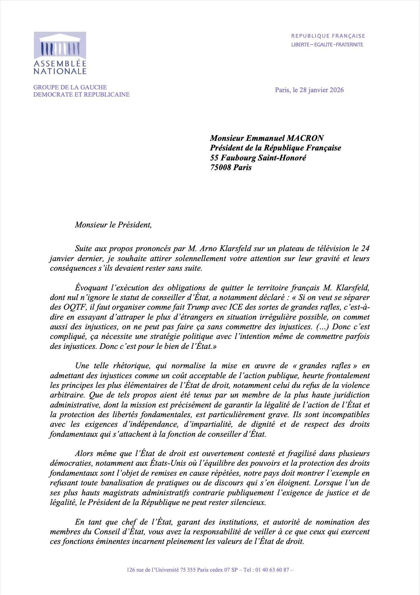
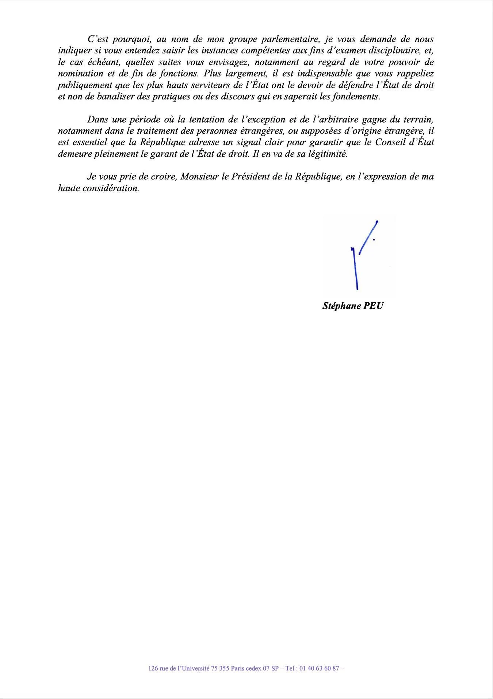

Publication relayée par le PCF 79
Les députés communistes saisissent l’Élysée après les propos d’Arno Klarsfeld
Date de mise à jour indiquée par Facebook · 28 janvier 2026
Texte de la publication · Les députés communistes
Après les propos relatifs à l'organisation de "rafles contre les OQTF" tenus par Arno Klarsfeld, conseiller d'Etat, sur le plateau de CNews, nous avons attiré l'attention du Président de la République, sur leur gravité et leurs conséquences s'ils devaient rester sans suite.
Notre courrier à Emmanuel Macron


Sources
Les députés communistes · publication relayée par le PCF 79 · bibliothèque Facebook · AR-0002-FB-00891
À lire aussi · Face au budget d’austérité, le PCF propose un pacte d’avenir